Verze 1.0 · červenec 2026
Subten je určen pro osoby starší 18 let.
Vítejte v uživatelské příručce aplikace Subten — kouče pro rekompozici těla pro iPhone a Apple Watch. Subten kombinuje zapisování jídla (AI skenování z fotky, čárové kódy, vyhledávání), adaptivní kalorický a makro engine, který se učí z vašich skutečných výsledků, tréninkový modul, hlubokou integraci s Apple Health a AI mentora.
Příručka pokrývá celou aplikaci: od vytvoření účtu a úvodního dotazníku přes všechny záložky a funkce až po předplatné, soukromí a řešení potíží. Je to průvodce typu jak na to: u každé funkce najdete, k čemu slouží, jak ji krok za krokem ovládat a co vám aplikace zobrazuje a proč.
Žádné předchozí znalosti výživy nejsou potřeba. Kdekoli se aplikace opírá o nějaký koncept (kalorický deficit, makroživiny, energetická dostupnost, adaptivní cíle), příručka jej stručně a srozumitelně vysvětlí.
Příručku můžete číst dvěma způsoby:
| Část | Obsah |
|---|---|
| I — Seznámení se Subtenem | Co je Subten, klíčové koncepty (energetický model, adaptivní cíle, kalibrace, Free vs. Premium), mapa obrazovek. |
| II — Začínáme | Vytvoření účtu, možnosti přihlášení, 7krokový úvodní dotazník, nastavení prvního dne. |
| III — Pět záložek | Jedna kapitola na každou záložku: Dnes, Jídlo, Trénink, Pokrok, Mentor. |
| IV — Adaptivní engine | Jak se vaše kalorické a makro cíle vyvíjejí z vašich skutečných dat a jaké jsou vestavěné strategie (cheat meal, dietní pauza, refeed, protokol při plató). |
| V — Apple Watch a zkratky | Aplikace pro hodinky, komplikace, akční tlačítko a zkratky Siri. |
| VI — Apple Health | Co přesně Subten čte a zapisuje, přepínače podle typu dat, zdravotní upozornění. |
| VII — Premium a předplatné | Free vs. Premium, zkušební období, promo kódy, sportovní balíčky, obnovení nákupů. |
| VIII — Nastavení, soukromí a účet | Profil, připomínky, export/import dat, souhlas s AI, smazání účtu. |
| IX — Řešení potíží a FAQ | Běžné problémy a jejich řešení. |
| Příloha | Slovníček pojmů. |
Kapitoly o obrazovkách (část III) mají pevnou strukturu: K čemu slouží → Rychlý start → Krok za krokem → Pole a možnosti → Návaznosti na další obrazovky → Časté chyby → Omezení.
Neproporcionální písmo označuje něco, co píšete.Poznámka: Rozhraní Subtenu je k dispozici v angličtině, slovenštině a češtině. Tato příručka používá české rozhraní; anglická a slovenská verze příručky používají odpovídající lokalizované popisky.
Subten je aplikace pro iOS (s doprovodnou aplikací pro Apple Watch) zaměřená na rekompozici těla — hubnutí tuku, budování svalů, nebo obojí. Její slogan je přímočarý: „−10 kg. Žádné výmluvy.“ Pod tou přímočarostí se ale skrývá promyšlený engine:
Subten je určen dospělým: aplikace při úvodním nastavení vynucuje věkovou hranici 18+.
Subten používá na všech obrazovkách jediný, záměrně jednoduchý energetický vzorec:
Zbývá = Denní cíl − Snědeno
Váš denní cíl už zahrnuje plánovanou aktivitu. Na rozdíl od mnoha kalorických aplikací cvičení nenavyšuje váš zbývající rozpočet: trénink vám ve výchozím nastavení „nevydělá“ jídlo navíc. Aktivita z Apple Health se zobrazuje jen pro informaci. Pouze když váš naměřený pohyb zřetelně převýší plán, aplikace denní cíl rozšíří a zobrazí jej jako Cíl + Pohyb navíc. Tím se předchází klasické pasti dvojího započítání, kdy optimistické odhady spálených kalorií vymažou váš deficit.
Vaše počáteční cíle vycházejí ze standardního odhadu (rovnice Mifflin–St Jeor plus aktivitní násobitel). Odhady jsou téměř u každého nepřesné — Subten je proto bere jen jako výchozí bod. Zhruba první dva týdny se aplikace kalibruje: potřebuje dostatek zapsaných dnů a vážení, než datům začne důvěřovat. Poté se cíle každý týden znovu odvozují z vašeho skutečného příjmu a skutečného trendu váhy. Pravidla a bezpečnostní pojistky podrobně vysvětluje část IV.
Váš tréninkový plán řídí vaše výživové cíle (tréninkové dny mohou mít jiné cíle než dny odpočinkové — viz typy dnů níže). To, co Apple Health naměří, slouží ke kontrole reality vůči plánu, ne k jeho přepisování minutu po minutě.
Každý den má svůj typ — Síla, Kardio, Odpočinek nebo Vlastní — zobrazený jako štítek na záložce Jídlo. Typy dnů umožňují carb cycling: denní cíl se může podle typu dne lišit. Speciální typy dnů nastavené strategiemi (cheat day, refeed, dietní pauza) jsou z týdenní adaptace vyloučeny, aby jeden plánovaný „vysoký“ den nezkreslil vaše statistiky.
Základní smyčka je zdarma: zapisování jídla vyhledáváním, čárovým kódem a ručně, přehledová obrazovka, tréninková záložka Můj plán, sledování pokroku, synchronizace s Apple Health, připomínky a export/import dat. Premium odemyká AI funkce (skenování fotek, skenování etiket, jídelníčky, Mentora) a plný tréninkový modul (Posilovna, Sport, osobní rekordy). Úplné srovnání najdete v kapitole 9.
Aplikace má pět záložek:
| Záložka | K čemu slouží |
|---|---|
| Dnes | Váš den na jeden pohled: energetický kruh, rychlé akce, kroky, voda, spánek a regenerace, dnešní trénink a jídla. |
| Jídlo | Jídelníček: zapisování, úpravy a plánování jídel; AI jídelníček a nákupní seznam. |
| Trénink | Váš tréninkový plán, knihovna cviků, aktivní trénink s odpočinkovým časovačem, osobní rekordy. |
| Pokrok | Graf váhy a trendu, tělesné míry, AI hodnocení postavy, fotky pokroku, série. |
| Mentor | AI mentor: chat, denní a týdenní přehledy, jídelníček, nákupní seznam. |
Do Nastavení se dostanete přes ikonu ozubeného kola na záložce Dnes.
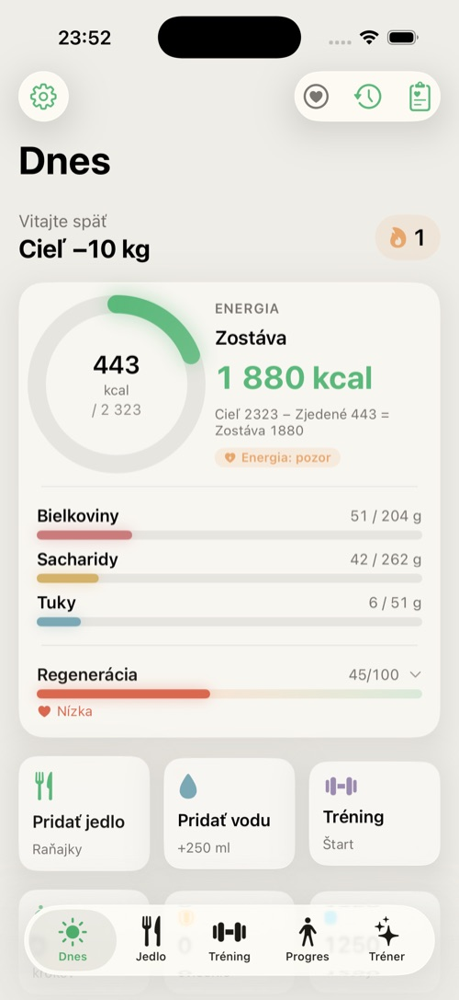
Tato část vás provede od instalace aplikace k prvnímu plně nastavenému dni.
Při prvním spuštění Subten zobrazí přihlašovací obrazovku. Účet můžete vytvořit třemi způsoby:
| Způsob | Poznámky |
|---|---|
| E-mail + heslo | Klasická registrace; e-mail potvrdíte. |
| Přihlásit se přes Apple | Nejrychlejší na iPhonu; svůj skutečný e-mail můžete skrýt. |
| Přihlásit se přes Google | Používá váš účet Google. |
Než se tlačítka Apple/Google aktivují, musíte souhlasit s podmínkami.
Zapomněli jste heslo? Klepněte na Zapomenuté heslo?, zadejte svůj e-mail a klikněte na odkaz ve zprávě pro obnovení — otevře aplikaci přímo na obrazovce pro nové heslo.
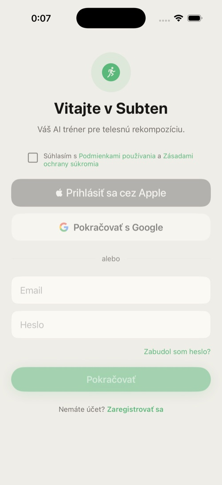
Úvodní nastavení je 7krokový dotazník s ukazatelem postupu (Krok X / 7). Kdykoli se můžete vrátit tlačítkem Zpět; kroky 5 a 6 lze přeskočit.
Upozornění: Subten je pouze pro dospělé. Výběr data narození nepřijme datum, podle kterého by vám bylo méně než 18 let.
Krok 1 — Vítejte. Aplikace se představí. Na iPhonu 15 Pro a novějších se navíc zobrazí tip: akční tlačítko (Action Button) můžete namapovat na rychlé přidání jídla.
Krok 2 — Profil. Zvolte pohlaví, nastavte datum narození, výšku (120–220 cm), aktuální váhu a cílovou váhu (obě 35–200 kg). Z těchto údajů vychází počáteční kalorický odhad.
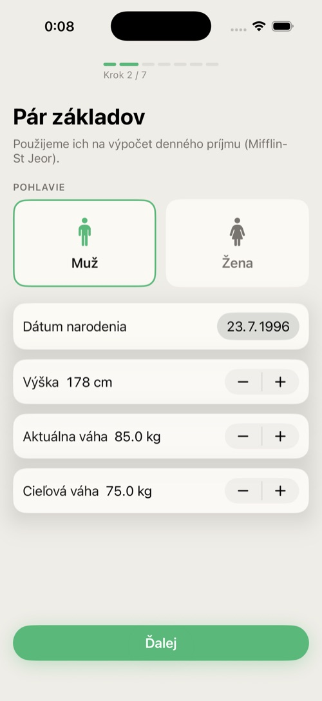
Krok 3 — Úroveň aktivity. Vyberte z možností Sedavá, Lehká, Střední, Aktivní, Velmi aktivní — každá karta vysvětluje, co to znamená v počtu tréninků týdně. Volte upřímně; adaptivní engine chyby odhadu opraví, ale s realistickým startem se ustálí rychleji.
Krok 4 — Cíl. Zvolte Spálit tuk, Nabrat svaly, Rekompozice nebo Udržovat.
Živá náhledová karta ukazuje vaše výchozí cíle: denní kcal, bílkoviny/sacharidy/tuky, deficit či nadbytek, odhadovaný čas do cíle a váš BMR a TDEE.
Krok 5 — Hodnocení postavy (volitelné). Rychlé vizuální sebehodnocení, které zpřesní odhad tělesného tuku. Pokud nechcete, klepněte na Přeskočit.
Krok 6 — Tréninkový plán (volitelný). Vyberte tréninkový split: Full Body 3×, Horní/dolní polovina 4×, Bro Split 5× nebo Push/Pull/Legs 6×. Plán můžete později změnit nebo si na záložce Trénink sestavit vlastní.
Krok 7 — Apple Health. Subten vysvětlí, co chce číst (váhu, kroky, srdeční data, spánek…). Klepněte na Povolit přístup a potvrďte v systémovém dialogu iOS. Tento krok můžete i přeskočit a povolit přístup později v Nastavení → Zdraví. Klepněte na Hotovo — váš profil se uloží a spustí se bezplatné zkušební období.
Záložka Dnes je vaše domovská obrazovka: jediný pohled vám řekne, jak den probíhá — energetický rozpočet, aktivita, voda, regenerace, plánovaný trénink a zapsaná jídla. Zároveň je odrazovým můstkem pro nejčastější akce.
Odshora dolů (karty se zobrazují, jen když jsou relevantní):
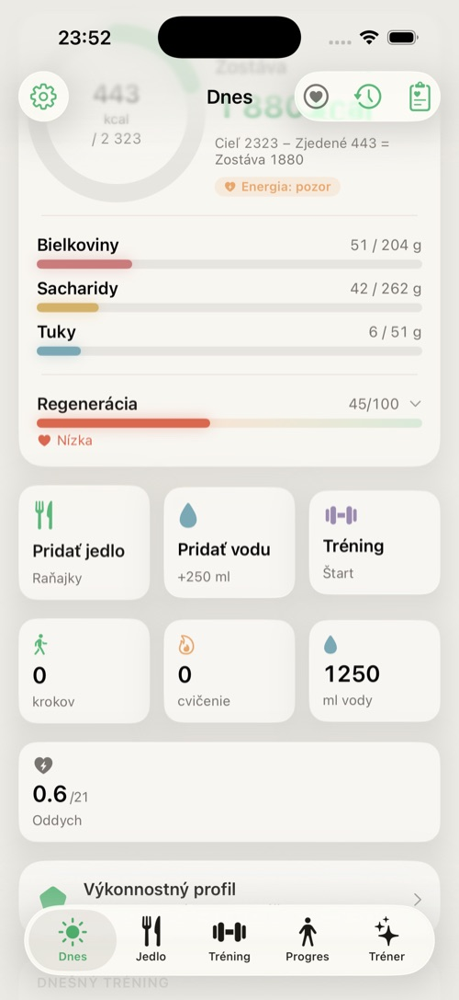
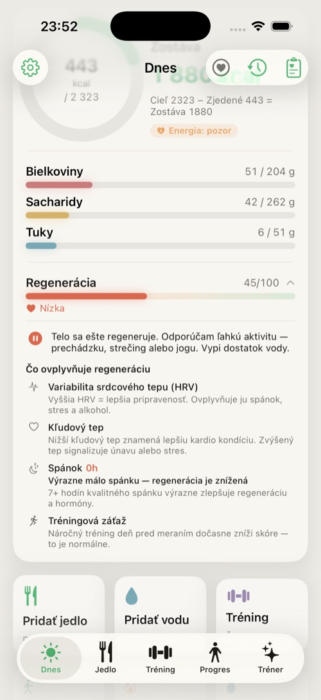
Poznámka — Apple Watch není potřeba. Skóre regenerace i všechny zdravotní metriky (HRV, tepová frekvence, spánek, SpO₂…) Subten čte z Apple Health, ne přímo z hodinek. Zdrojem může být cokoli, co tato data do Apple Health zapisuje — Apple Watch, Garmin, Oura, Whoop, jiné náramky či prsteny, nebo i samotný iPhone (kroky, spánek). Pokud v Apple Health žádná taková data nejsou, regenerace se jednoduše nezobrazí.
Záložka Jídlo je váš jídelníček: vše, co jíte a pijete, uspořádané podle jídel (snídaně, oběd, večeře, svačina), s denními součty vůči vašim cílům — včetně vlákniny.
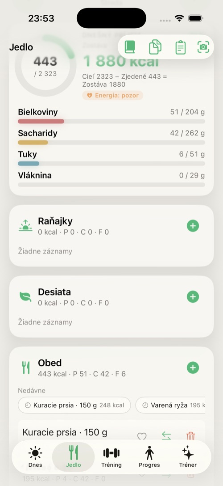
| Způsob | Jak | Dostupnost |
|---|---|---|
| Vyhledávání | Napište název, vyberte výsledek, nastavte množství. Přílohy lze přidat ve stejném kroku. | Free |
| Čárový kód | Namiřte fotoaparát na čárový kód; produkt se načte z databáze Open Food Facts. | Free |
| AI sken z fotky | Vyfoťte svůj talíř (nebo vyberte z galerie); AI jídlo rozpozná a doplní makra, která zkontrolujete a potvrdíte. | Premium |
| Sken nutriční etikety | Vyfoťte etiketu; AI přečte hodnoty. | Premium |
| Skener receptů a Recepty | Naskenujte nebo si uložte vícesložkové recepty a zapisujte jejich porce. | Free |
| Rychlé přidání | Napište název a kcal/bílkoviny/sacharidy/tuky/vlákninu přímo. | Free |
| Oblíbené / Nedávné / Časté | Opakovaný zápis často používaných potravin jedním klepnutím (uložíte ikonou srdce). | Free |
Tip: Skeny z fotky fungují i offline — zařadí se do fronty a zpracují se, jakmile budete zase online. Banner ukazuje čekající a neúspěšné skeny; klepnutím na něj otevřete frontu skenů.
Tip pro nejlepší výsledek: Skener má tři režimy — Čárový kód · Etiketa · Jídlo. Pokud se produkt nenajde podle čárového kódu (chybí v databázi Open Food Facts), přepněte na režim Etiketa a vyfoťte obal s výživovou tabulkou (hodnoty na 100 g nebo na porci). AI z ní přečte makra a doplní je za vás — spolehlivěji než odhad z talíře přes režim Jídlo.
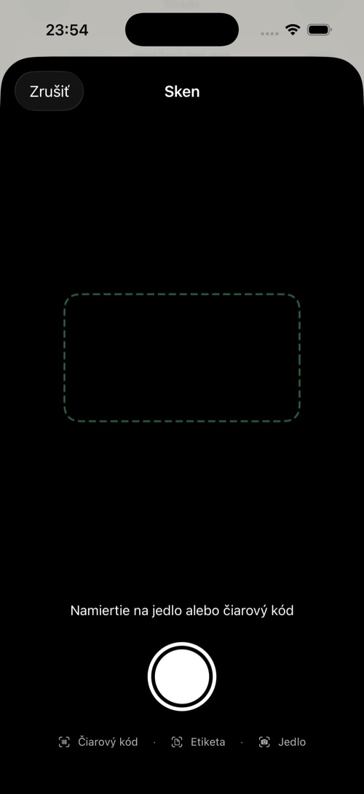
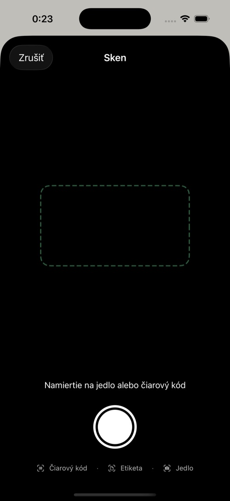
Klepnutím na řádek potraviny otevřete úpravy: změňte gramáž krokovačem po ±10 g nebo předvolbami (50/100/150/200/300 g), případně makra zcela přepište. Přejetím nebo přes kontextové menu můžete potravinu přidat do oblíbených, přesunout do jiného jídla, zkopírovat do dneška (z minulého dne) nebo smazat (s potvrzením).
Panel nástrojů → Jídelníček vygeneruje celý den jídel odpovídající vašim aktuálním cílům. Preference můžete zadat běžným jazykem („asijská kuchyně, bez mléčných výrobků“). Plán zkontrolujte, klepnutím na přidat do dne jej zapište a pro ingredience otevřete nákupní seznam.
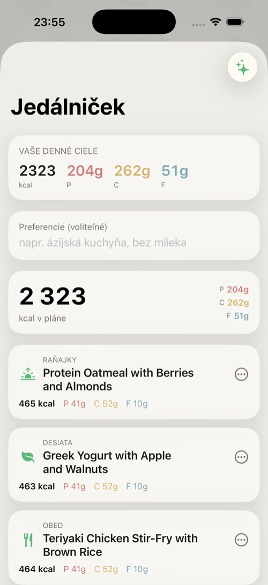
Záložka Trénink obsahuje váš plán, vaše tréninky a historii. Má čtyři podzáložky: Můj plán, Posilovna, Sport a Knihovna.
Váš aktivní plán: banner pro pokračování v rozdělaném tréninku, pás týdne, dnešní trénink, sekce tréninků z Apple Watch, které můžete importovat, týdenní statistiky a historie tréninků. Odtud můžete Přidat aktivitu (ručně zapsat kardio) nebo Vytvořit tréninkový plán.
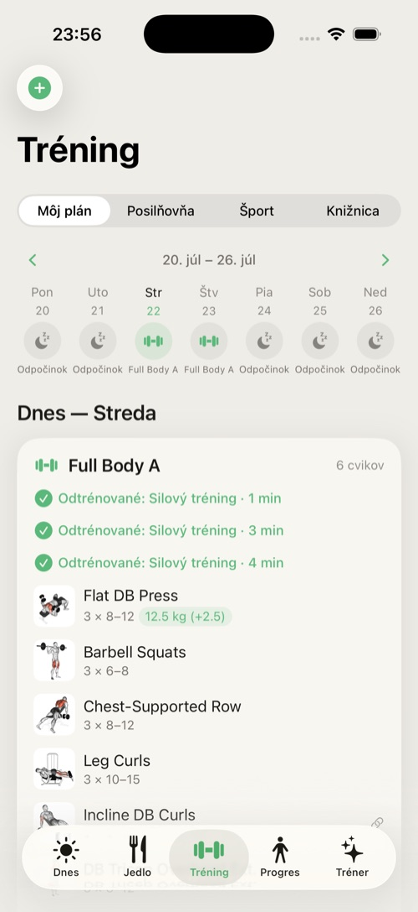
Spuštěním tréninku se otevře živá obrazovka: cviky se sériemi a opakováními, odpočinkový časovač a Live Activity na zamčené obrazovce, takže odpočinek sledujete bez odemykání telefonu. Dokončený trénink se uloží do historie a (pokud jste to povolili) do Apple Health; nové osobní rekordy se rozpoznávají automaticky.
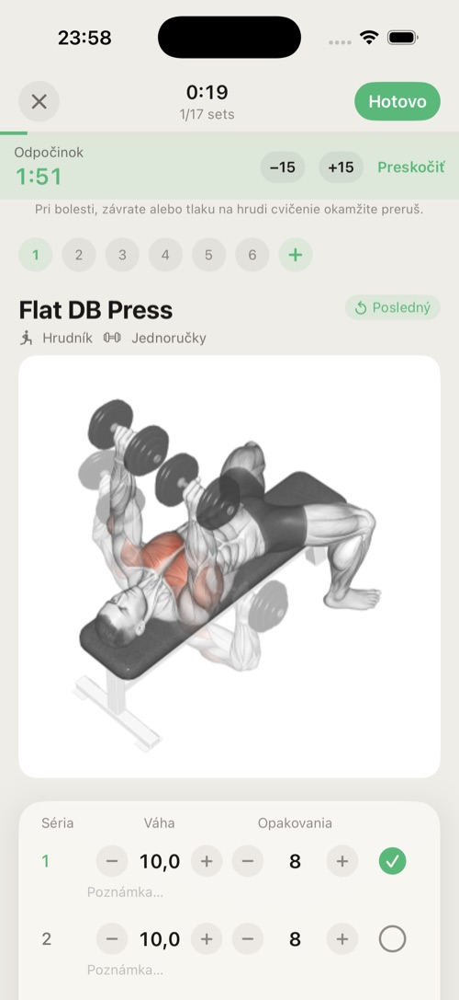
Bez Premium se v těchto podzáložkách zobrazuje karta s nabídkou předplatného.
Knihovna cviků: filtrujte podle svalové skupiny, sledujte animované ukázky, čtěte pokyny k technice a vytvářejte vlastní cviky.
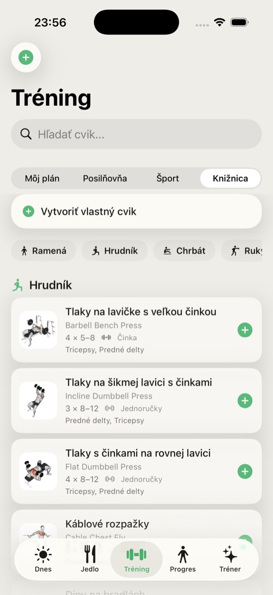
Poznámka: Tréninkový modul obsahuje upozornění ke cvičení — Subten poskytuje vedení, ne lékařskou radu. Přestaňte s jakýmkoli cvikem, který způsobuje bolest.
Záložka Pokrok sleduje výsledek: váhu, trend, složení těla, míry a fotky.
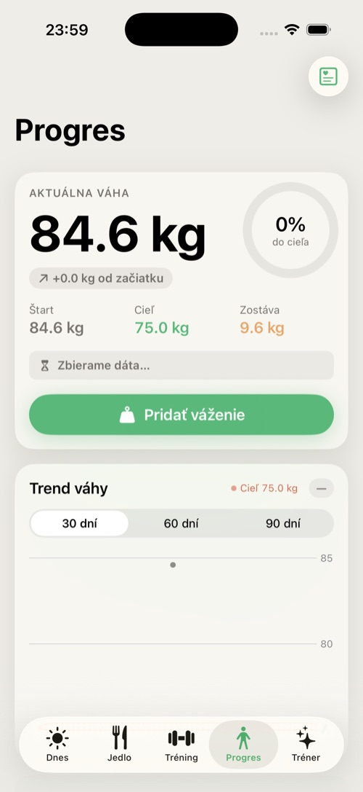
AI hodnocení postavy (Premium) odhadne ze tří fotografií složení těla, somatotyp, hodnocení svalových skupin a doporučení. Otevřete jej na záložce Pokrok → AI hodnocení těla.
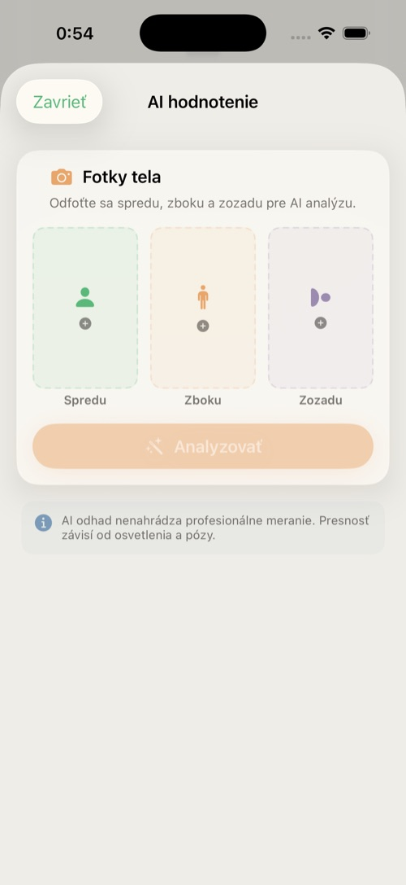
Upozornění — fotky se posílají do externí služby. Analýza postavy neprobíhá na zařízení. Při první AI funkci, která posílá data mimo telefon, se zobrazí obrazovka souhlasu: Subten odešle vaše fotky postavy a zdravotní metriky poskytovatelům AI modelů (např. Google Gemini) přes OpenRouter, zpracované na serverech v USA, a to pouze pro vytvoření vašeho výsledku. Bez udělení souhlasu funkce neběží; zbytek aplikace můžete používat i bez něj. (Platí to i v Soukromém režimu — viz 8.3.)
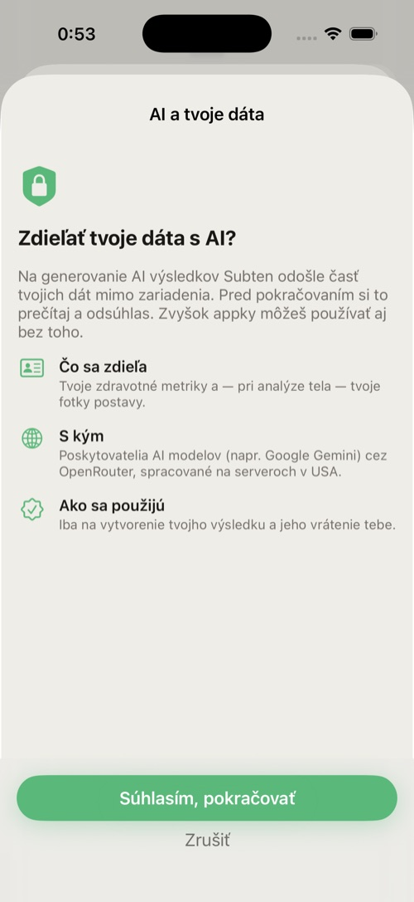
Výsledek je AI odhad, nikoli lékařské měření — přesnost závisí na osvětlení a póze.
Záložka Mentor je váš AI mentor: chat, který zná vaše data, a čtyři přehledy na jedno klepnutí. Vysvětluje, navrhuje a — s vaším potvrzením — jedná.
Poznámka: V souladu s nařízením EU o umělé inteligenci (EU AI Act) Mentor uvádí, že komunikujete s AI mentorem. Není to lékař, nutriční specialista ani trenér; se zdravotními obtížemi se obraťte na odborníka.
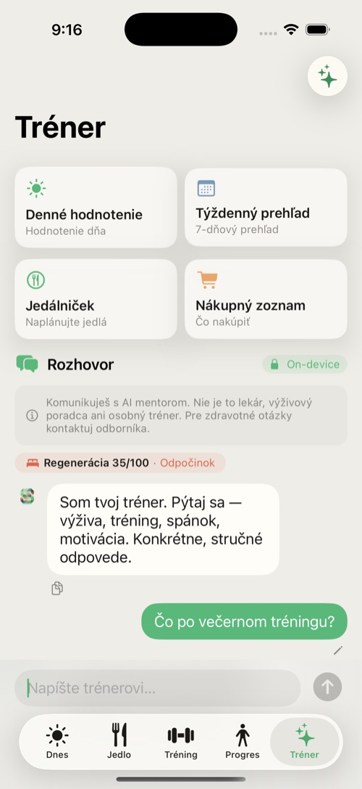
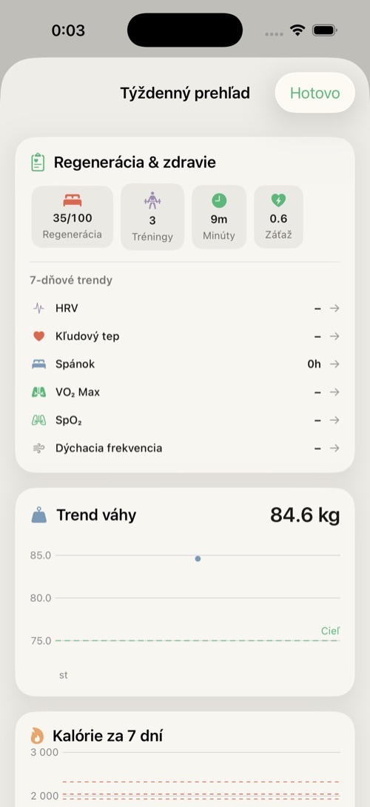
Textové funkce Mentora (chat, denní a týdenní přehled, analýza plató) umí Subten zpracovat přímo na vašem iPhonu — bez odeslání čehokoli do cloudu. Děje se to automaticky, nemusíte nic zapínat.
Jak to poznáte v chatu: když odpověď Mentora běží v zařízení, v hlavičce konverzace je odznak se zámkem a nápisem „On-device” (tj. „v zařízení”). Když tento odznak není, odpověď zpracoval cloud. Jednoduché pravidlo: zámek = v zařízení, bez zámku = cloud.
Lokální model je dostupný jen na iPhonech s 6 GB RAM a více. Na slabších zařízeních (méně než 6 GB) Mentor používá vždy cloud a odznak „On-device” se nezobrazí nikdy.
Aby fungovala AI v zařízení, potřebuje Subten jazykový model (~3 GB). Doučovací adaptér je součástí aplikace, ale samotný základní model se stahuje až po instalaci, a to takto:
Prakticky: po první instalaci nechte telefon chvíli na Wi-Fi a AI v zařízení se připraví sama. Do té doby aplikace funguje normálně, jen přes cloud.
Subten se rozhoduje automaticky — nemusíte nic přepínat. Lokální (on-device) model se použije, když jsou splněny všechny tři podmínky zároveň:
Tehdy odpověď nese odznak On-device a nic neopouští telefon. Ve všech ostatních případech se použije cloud (OpenRouter API):
| Funkce | Kde běží |
|---|---|
| Chat, denní/týdenní přehled, analýza plató (SK/CS/EN) | Lokálně* |
| Skenování jídla z fotky, skenování etikety a receptu | Vždy cloud |
| AI hodnocení postavy (posílá fotky) | Vždy cloud |
| AI jídelníček, AI odhad jídla | Vždy cloud |
| Chat, který má zapsat jídlo/aktivitu do deníku | Cloud |
| Nepodporovaný jazyk nebo model ještě není připraven | Cloud |
* Pokud lokální generování selže, Subten tiše přepne na cloud, abyste dostali odpověď (neplatí v Soukromém režimu).
Na iPhonech s 6 GB RAM a více najdete v Nastavení přepínač Soukromý režim: AI pouze v zařízení. Běžné (automatické) chování už tak upřednostňuje zařízení; tento přepínač navíc zakáže přepnutí na cloud pro textové funkce Mentora — pokud by lokální model nemohl odpovědět, raději zobrazí poctivou chybu, než by data poslal do cloudu. Offline se aplikace chová stejně jako v soukromém režimu.
I v soukromém režimu cloudové funkce zůstávají v cloudu: skenování jídla, etikety a receptu, AI odhad jídla, jídelníček a hodnocení postavy (posílají vaše fotky) — ty bez cloudu jednoduše neběží.
Mentor je funkce Premium; bez Premium záložka zobrazuje kartu s nabídkou odemknutí.
Tato kapitola uživatelsky vysvětluje, jak se vaše cíle v čase mění. Nemusíte pro to nic dělat — stačí zapisovat jídlo a vážit se.
Engine na vaše cíle nesáhne, dokud nemá: alespoň 14 dní historie, alespoň 10 dní se zapsaným příjmem a alespoň 3 vážení. Do té doby záložka Dnes zobrazuje kalibrační banner. Výchozí cíle jsou záměrně konzervativní.
Každých 7 dní engine změří váš skutečný udržovací příjem z reálných dat: váš průměrný příjem a skutečný trend váhy dohromady prozradí, kolik doopravdy spálíte. Nový denní cíl je tento naměřený udržovací příjem plus deficit či nadbytek podle vašeho cíle. Bezpečnostní pojistky:
Když se cíle změní, uvidíte na záložce Dnes odznak Tento týden upraveno a Mentor vám změnu umí vysvětlit.
Váš odhad dosažení cíle se přepočítává z naměřeného trendu. Může ukazovat sbíráme data, žádný jasný trend, cíl dosažen, nebo konkrétní datum. Pokud by aktuální trend znamenal déle než zhruba dva roky, aplikace odhad zastropuje, místo aby zobrazovala fikci.
Nastavení → Pokročilé → Životní situace a strategie (a centrum strategií) nabízejí plánované protokoly:
| Strategie | Co dělá |
|---|---|
| Cheat meal | Jedno plánované volné jídlo; den se vyloučí z adaptace. |
| Refeed | Plánovaný den s vyšším příjmem sacharidů, užitečný v dlouhých fázích hubnutí. |
| Dietní pauza | 1–2 týdny na udržovacím příjmu; engine pozastaví adaptaci. |
| Protokol při plató | Strukturovaná reakce, když váha stagnuje navzdory dodržování plánu. |
Používání vestavěných strategií (místo nahodilých dnů mimo plán) udržuje vaše data čistá a adaptaci přesnou.
Aplikace Subten pro Apple Watch je volitelný doplněk — pohodlný pohled na den přímo na zápěstí (kruhy, voda, komplikace). Není podmínkou používání Subtenu: zdravotní data (regeneraci, spánek, tepovou frekvenci…) čte Subten z Apple Health nezávisle na ní, takže do Apple Health mohou přispívat i hodinky jiné značky nebo jiný nositelný senzor (viz kapitola 11).
Domovská obrazovka na hodinkách zrcadlí váš den:

Přidejte si komplikaci Subten na ciferník a uvidíte zbývající kalorie na jeden pohled; widget na iPhonu dělá totéž na domovské obrazovce.
Na iPhonu 15 Pro a novějších můžete akční tlačítko (Action Button) namapovat na akci Subtenu Přidat jídlo nebo Skenovat jídlo. Stejné akce fungují se Siri a v aplikaci Zkratky; hodinky přidávají akci Zapsat vodu.
Subten žádá o přístup ke Zdraví, jen když jej výslovně povolíte (krok 7 úvodního nastavení nebo Nastavení → Zdraví). Každý typ dat ovládáte samostatně.
Subten čte to, co je v Apple Health, bez ohledu na to, které zařízení tam data zapsalo. Apple Watch není podmínka — stačí cokoli, co do Apple Health přispívá: Apple Watch, Garmin, Oura, Whoop, jiné náramky a prsteny, nebo samotný iPhone (kroky, spánek). Čím více dat v Apple Health máte, tím přesnější jsou regenerace a doporučení; bez nich Subten funguje dál, jen tyto funkce zůstanou prázdné.
| Data | Směr |
|---|---|
| Váha | čtení i zápis |
| Kroky, aktivní energie, tréninky, spánek, voda | čtení |
| HRV, klidová tepová frekvence, SpO₂, dechová frekvence, teplota zápěstí | čtení (skóre regenerace) |
| Přijaté kalorie, makra, voda | zápis |
Zdravotní upozornění: když data vykazují anomálie (neobvyklé SpO₂, dechovou frekvenci, tep, HRV, teplotu nebo spánek), Subten zobrazí banner na záložce Dnes. Jde o informativní upozornění, ne o diagnózy.
Tip: Pokud čísla vypadají zdvojeně (např. trénink započítaný dvakrát), zkontrolujte, že tréninky zapisuje jen jedna aplikace, nebo vypněte synchronizaci daného typu v Nastavení → Zdraví → Synchronizace podle typu.
| Funkce | Free | Premium |
|---|---|---|
| Zapisování jídla: vyhledávání, čárový kód, ručně, recepty, oblíbené | ✓ | ✓ |
| Přehled, Pokrok, série | ✓ | ✓ |
| Trénink — Můj plán, Knihovna | ✓ | ✓ |
| Synchronizace s Apple Health, připomínky, aplikace pro hodinky | ✓ | ✓ |
| Export a import dat | ✓ | ✓ |
| AI skenování fotek a etiket | — | ✓ |
| AI jídelníčky a nákupní seznam | — | ✓ |
| AI Mentor (chat, přehledy) | — | ✓ |
| Trénink — Posilovna a Sport, osobní rekordy | — | ✓ |
| Sportovní balíčky | — | ✓ |
| Synchronizace přes iCloud | — | ✓ |
Nabídka předplatného obsahuje měsíční a roční plán (roční je označen jako Nejvýhodnější s rozpisem ceny na měsíc) s bezplatným zkušebním obdobím. Nákupy probíhají přes vaše Apple ID; předplatné se automaticky obnovuje, dokud jej nezrušíte v nastavení iOS. Obnovit nákupy obnoví existující předplatné na novém zařízení. Pole promo kód přijímá kódy.
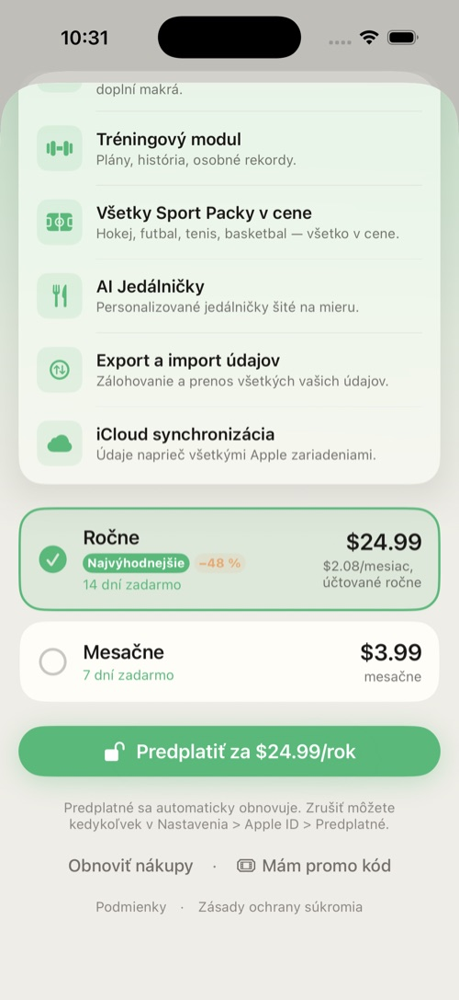
Lokální bezplatné zkušební období se spustí po dokončení úvodního nastavení. Po jeho skončení se AI a prémiové tréninkové funkce opět zamknou a aplikace zobrazí Zkušební období vypršelo — Aktivovat Premium. K vašim datům nikdy nepřijdete: zapisování, pokrok a export zůstávají zdarma.
Nastavení otevřete ozubeným kolem na záložce Dnes.
| Sekce | Co v ní najdete |
|---|---|
| Upravit profil a cíle | Změna cílové váhy, cíle, tempa, aktivity — cíle se přepočítají. |
| Předplatné | Stav Premium, aktivace, promo kód. |
| Soukromý režim | Přepínač AI pouze v zařízení (zařízení s 6 GB+, viz §8.3). |
| Připomínky | Snídaně, oběd, večeře, voda, trénink, vážení — každá s vlastním časem. |
| Zdraví | Hlavní přepínač plus přepínače synchronizace podle typu. |
| Jednotky | kg / lbs (jen pro zobrazení). |
| Jazyk | Angličtina / slovenština / čeština (vyžaduje restart). |
| Pokročilé | Životní situace a strategie; Export a import vašich dat. |
| Zpětná vazba | Odeslání zpětné vazby vývojáři. |
| Účet | Odhlášení; Smazat účet a data. |
| AI v Subtenu | Co dělají AI funkce, přepínač souhlasu se sdílením dat pro AI, zásady ochrany soukromí a prohlášení. |
| O aplikaci | Informace o verzi. |
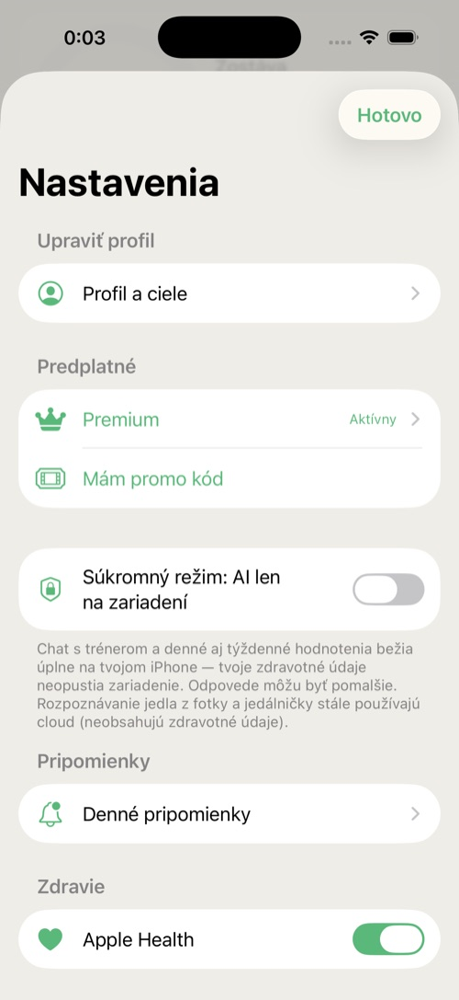
Banner hlásí „Nepodařilo se načíst databázi potravin.“ Klepněte na Zkusit znovu. Pokud potíž přetrvává, aplikaci vynuceně ukončete a znovu otevřete.
Můj sken z fotky visí ve stavu „čeká“. Skeny se offline řadí do fronty a zpracují se automaticky, jakmile budete online. Frontu skenů otevřete z banneru a neúspěšné položky zopakujte.
Na obrazovce předplatného se nenačítají ceny. Cena není k dispozici, zkuste to později znamená, že App Store neodpověděl — klepněte na Zkusit znovu a zkontrolujte připojení.
Moje cíle se týdny nezměnily. Ověřte, že splňujete kalibrační minima (§9.1): dostatek zapsaných dnů a alespoň 3 vážení v daném okně. Týdny dietní pauzy se přeskakují záměrně.
Zbývá se při cvičení nezvyšuje. Je to záměr — viz energetický model (§2.2).
Kroky/váha se nesynchronizují. Zkontrolujte Nastavení → Zdraví: hlavní přepínač i přepínač daného typu. Pak zkontrolujte iOS Nastavení → Soukromí a zabezpečení → Zdraví → Subten.
Změnil(a) jsem jazyk, ale aplikace je namíchaná. Restartujte aplikaci — změna jazyka to vyžaduje.
Záložka Mentor zobrazuje jen kartu s odemknutím. Mentor je Premium; spusťte zkušební období nebo si předplaťte. Pokud Premium máte, klepněte na obrazovce předplatného na Obnovit nákupy.
Nemohu vybrat své datum narození. Subten je 18+; výběr data to vynucuje.
Smazání účtu selhalo. Potřebujete připojení k síti (musí se smazat i kopie na serveru). Zkuste to znovu online; pokud potíž přetrvává, kontaktujte podporu přes Nastavení → Zpětná vazba.
| Pojem | Význam |
|---|---|
| BMR | Bazální metabolismus — energie spálená v naprostém klidu. |
| TDEE | Celkový denní energetický výdej — BMR plus veškerá aktivita; váš skutečný udržovací příjem. |
| Deficit / nadbytek | Jíst pod / nad udržovacím příjmem — hnací síla hubnutí tuku / nabírání svalů. |
| Makra | Bílkoviny, sacharidy, tuky (Subten sleduje i vlákninu). |
| Rekompozice | Hubnutí tuku a budování svalů ve stejném období. |
| Energetická dostupnost (EA) | Energie, která tělu zbývá po tréninku; chronicky nízká EA škodí zdraví i adaptaci. |
| Typ dne | Síla / Kardio / Odpočinek / Vlastní — řídí denní cíle (carb cycling). |
| Kalibrace | Prvních ~2 týdnů, během nichž Subten sbírá data, než začne cíle adaptovat. |
| Refeed | Plánovaný den s vyšším příjmem sacharidů v rámci dietní fáze. |
| Dietní pauza | Plánovaná 1–2týdenní přestávka na udržovacích kaloriích. |
| Série | Počet po sobě jdoucích dnů zapisování. |
| HRV | Variabilita srdeční frekvence — ukazatel regenerace čtený z Apple Health. |
| Live Activity | Widget na zamčené obrazovce iOS zobrazovaný během aktivního tréninku. |
Subten — Uživatelská příručka · v1.0 · © 2026